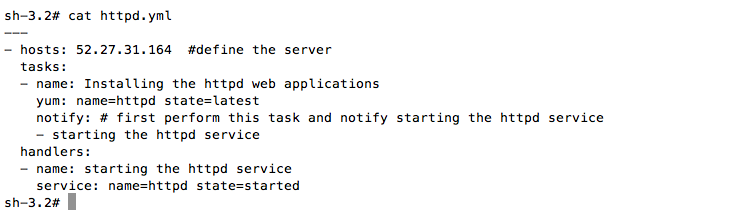
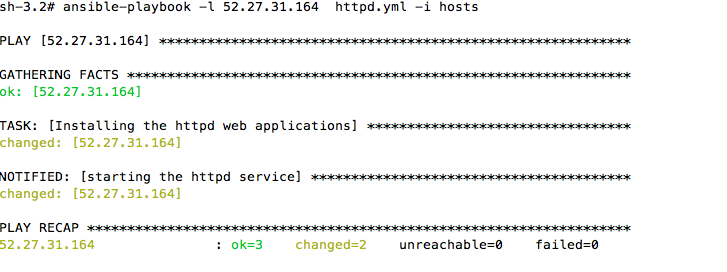
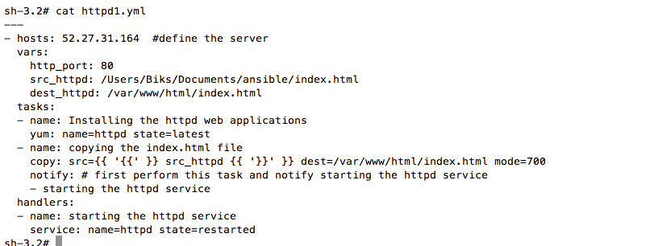
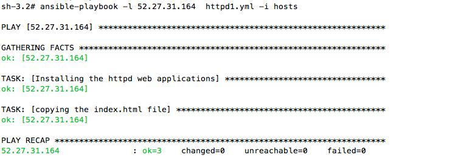

What is playbook ?
It is a series of commands(ansible module) in a file that are targeted to the particular host or groups. i.e. ansible configuration management script to manage some host.It has a .yml format.
cat httpd.yml
Play book to install and start the httpd service
$ cat httpd.yml
Notify calls the handlers once it get executed.This is one of the way to solve the order of the tasks.Without notify, ansible might execute the sevice start task, which will through the error,b/c httpd has to be installed before starting it.
anisble-playbook httpd.yml -l 192.168.1.1 -i hosts
Handlers and tasks
Handlers and tasks are the way to perform the ansible modules.Handlers only get performed when tasks calls it.it is the secondary options that might be requied after certain tasks execution.
Notify
Notify is used to Notify the handlers after the task is run
When
when is similar to the Notify, which tells ansible to run the task, when somthing else happend. To perform the series of tasks in order.
variable
vars: is used to store the variable.
- vars: hostname=192.168.1.152
register
it holds the result of the task
register: result
result | success or failure
hosts List of machines, on which the following task will be performed
remote_host remote user account which will be used to perform the tasks.
Play book to change the file of the running applications and restart the service
$ cat httpd1.yml
anible-playbook -l 192.168.1.5 httpd1.yml -i hosts
Play book to use the su command and switch the user in the remote host
Login as root.
--- - hosts: webservers remote_user: root
Login as root, but perform some asks as user.
---
- hosts: webservers
remote_user: root
- tasks:
name:
copy:
remote_user: yourname
Run certain command as root users.
---
- hosts: webservers
remote_user: yourname
sudo: yes
Run entire command as root user, by changing to su or different users
---
- hosts: webservers
remote_user: yourname
become: yes
become_method: differentname or su
Play book to use when/register command to install httpd service,change the httpd.conf file,restart the service and change user to pinglinux from root to perfom all the tasks.
$ cat httpd3.yml
---
- hosts: 52.27.31.164
remot_user:root
become:yes
become_users: httpd #all tasks will be perfored as httpd users
vars:
http_port: 80
src_httpd: /Users/Biks/Documents/ansible/index.html
dest_httpd: /var/www/html/index.html
tasks:
- name: Installing the httpd web applications
yum: name=httpd state=latest
register: result
tasks:
- name: copying the index.html file
copy: src={{ '{{' }} src_httpd {{ '}}' }} dest={{ '{{' dest_httpd '}}' }} mode=700 owner=httpd
when: register | success
notify: # first perform this task and notify starting the httpd service
- starting the httpd service
handlers:
- name: starting the httpd service
service: name=httpd state=restarted